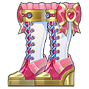

추천 광추
다음 꽃피는 계절의 만남
치피와 환락 공격 보강
효과 자세히
에너지와 훌륭한 솜씨를 축적하는 공격 운용.
오늘의 행운
치명타와 환락 화력
효과 자세히
부옵에서 전투 치확 상한을 확보.
눈부신 파키의 세상
환락 전광 대안
효과 자세히
스파키 전광 보유 시 환락 화력 보강.
슈룸 모험기
망각의 정원 상점 대안
효과 자세히
무료 중첩 선택.
추천 유물
빛나는 공훈의 마법 소녀 4 · 0호 스테이지 펑크 로드 2
- 머리
 주옵션HP부옵션속도 · 치명타 확률 · 치명타 피해
주옵션HP부옵션속도 · 치명타 확률 · 치명타 피해 - 손
 주옵션공격력부옵션속도 · 치명타 확률 · 치명타 피해
주옵션공격력부옵션속도 · 치명타 확률 · 치명타 피해 - 몸통
 주옵션치명타 피해부옵션속도 · 치명타 확률
주옵션치명타 피해부옵션속도 · 치명타 확률 - 다리

주옵션속도부옵션치명타 확률 · 치명타 피해 - 구체
 주옵션물리 피해 / HP%부옵션속도 · 치명타 확률 · 치명타 피해
주옵션물리 피해 / HP%부옵션속도 · 치명타 확률 · 치명타 피해 - 매듭
 주옵션에너지 회복효율부옵션속도 · 치명타 확률 · 치명타 피해
주옵션에너지 회복효율부옵션속도 · 치명타 확률 · 치명타 피해
이 조합을 추천하는 이유
속도 신발. 아하 타임 직전에 행동합니다.
빛나는 공훈의 마법 소녀 4 · 0호 스테이지 펑크 로드 2
- 머리
주옵션HP부옵션속도 · 치명타 확률 · 치명타 피해
- 손
주옵션공격력부옵션속도 · 치명타 확률 · 치명타 피해
- 몸통
주옵션치명타 피해부옵션속도 · 치명타 확률
- 다리 주옵션속도부옵션치명타 확률 · 치명타 피해
- 구체
주옵션HP% / 방어력%부옵션속도 · 치명타 확률 · 치명타 피해
- 매듭
주옵션에너지 회복효율부옵션속도 · 치명타 확률 · 치명타 피해
이 조합을 추천하는 이유
마법소녀와 펑크 로드를 사용합니다.
빛나는 공훈의 마법 소녀 4 · 0호 스테이지 펑크 로드 2
- 머리
주옵션HP부옵션치명타 확률 · 치명타 피해
- 손
주옵션공격력부옵션치명타 확률 · 치명타 피해
- 몸통
주옵션치명타 피해부옵션치명타 확률
- 다리 주옵션공격력%부옵션치명타 확률 · 치명타 피해
- 구체
주옵션물리 피해부옵션치명타 확률 · 치명타 피해
- 매듭
주옵션에너지 회복효율부옵션치명타 확률 · 치명타 피해
이 조합을 추천하는 이유
공격력 신발과 물리 피해 구체를 사용합니다.
빛나는 공훈의 마법 소녀 4 · 0호 스테이지 펑크 로드 2
- 머리
주옵션HP부옵션치명타 확률 · 치명타 피해
- 손
주옵션공격력부옵션치명타 확률 · 치명타 피해
- 몸통
주옵션치명타 피해부옵션치명타 확률
- 다리 주옵션공격력%부옵션치명타 확률 · 치명타 피해
- 구체
주옵션물리 피해부옵션치명타 확률 · 치명타 피해
- 매듭
주옵션에너지 회복효율부옵션치명타 확률 · 치명타 피해
이 조합을 추천하는 이유
공격력 신발과 물리 피해 구체를 사용합니다.
이 정도면 잘 키웠다
선택한 세팅 기준 · —는 확인된 수치 없음
- 아하 타임 직전
- 효광 전광 치확 참고
속도 신발. 아하 타임 직전에 행동합니다.
| 스탯 | 추천 스탯 | 준종결 | 종결 |
|---|---|---|---|
| 속도 | 아하 타임 +0.1[1]효광 200·매+바커공 환락 개척자 157일 때 에바네시아 143 예시. | — | — |
| 치명타 확률 | 70%[2]효광 전용 광추 치확 +10% 참고. | — | — |
| 치명타 피해 | 240% | — | — |
- 종결 명함·전광
마법소녀와 펑크 로드를 사용합니다.
| 스탯 | 추천 스탯 | 준종결 | 종결 |
|---|---|---|---|
| 속도 | 134 | — | 134 |
| 치명타 확률 | — | — | 70%[1]종결 시트의 치확은 전투 여부 미기재. |
| 치명타 피해 | 220%+ | — | 300% |
세팅 기준·출처
추천은 Prydwen 속도와 치피, 종결은 시트 기준입니다. 종결 치확의 전투 적용 기준은 미기재입니다. 별도 준종결 목표는 확인되지 않았습니다. 종결 표는 기본적으로 명함·전용 광추 기준입니다.
스탯 조건과 각주
- 치명타 확률 · 종결 종결 시트의 치확은 전투 여부 미기재. ↑
- 전광
- 치확 전투 전
공격력 신발과 물리 피해 구체를 사용합니다.
| 스탯 | 추천 스탯 | 준종결 | 종결 |
|---|---|---|---|
| 공격력 | 2000 | — | 2000~2500 |
| 치명타 확률[1]비전투 기준. 자체 치확 +30%, 효광 전광 사용 시 필요 비전투 치확 10%p 감소. | 60% | — | 70% |
| 치명타 피해 | 230~270% | — | 280%+ |
스탯 조건과 각주
- 치명타 확률 비전투 기준. 자체 치확 +30%, 효광 전광 사용 시 필요 비전투 치확 10%p 감소. ↑
성혼과 추천 돌파
여우 선생님 뒤 환락 스킬 연계가 목적이면 1돌. 아하 2돌을 쓰면 승격 효과가 추가 강화.
1저항 관통 +20% · 여우 후 환락 스킬추천
환락 스킬의 훌륭한 솜씨 +10pt.
2치피 +36%
승급 2/6단계 행적의 훌륭한 솜씨 획득량이 각각 50%/100% 증가.
3필살기 +2 · 일반 공격·환락 스킬 +1
해당 스킬과 대응 강화 스킬의 레벨을 올린다.
4방어력 무시 15%
악당에게 꺾인 꽃밭
5전투 스킬·특성 +2 · 환락 스킬 +1
해당 스킬과 대응 강화 스킬의 레벨을 올린다.
6훌륭한 솜씨 +1턴 · 환락 증소 +15%
솜씨 100pt당 증소 +2%p, 최대 1,000pt. 첫 필살기 및 이후 4회마다 에너지 +120.
추천 파티


기본 운영과 행적
기본 운영
효광 아하 타임과 펄 저본으로 환락 자원을 공급. 에너지가 차면 필살기. 아하 승격 중에는 초과 에너지도 활용.
행적 육성 순서
특성 → 환락 스킬 → 전투 스킬·필살기. 승급 2단계 치확과 4단계 여우 취약 우선.
아하 속도 계산기 →